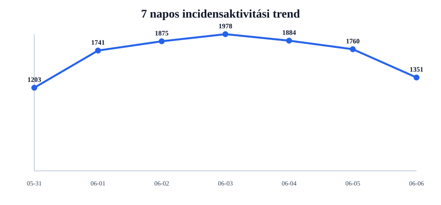
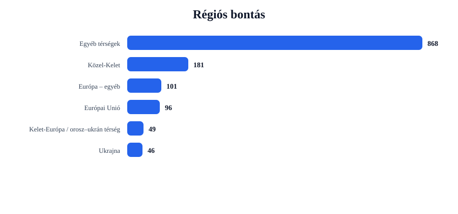
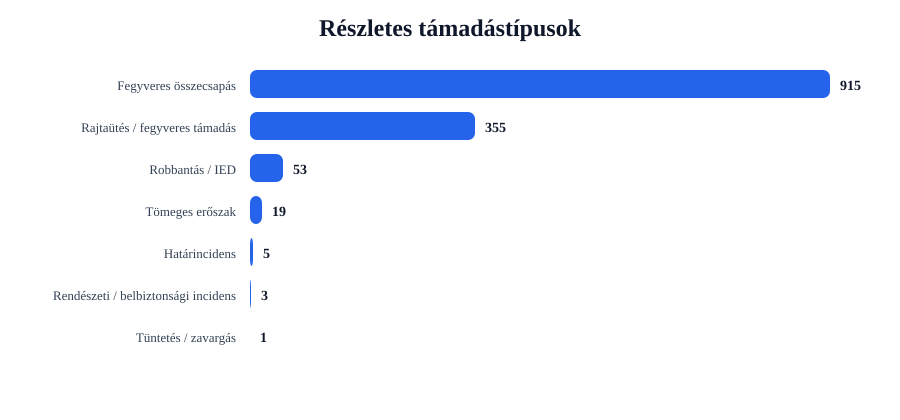
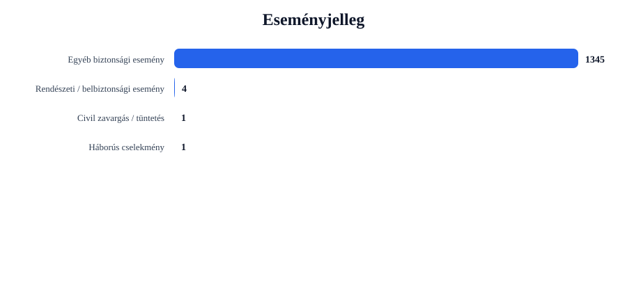

Rövid napi értékelés
Az incidensek száma csökkent: -409 esemény, 23.2% visszaesés.
A legtöbb találat ehhez az országhoz kapcsolódott: United States (395 esemény).
A legerősebb regionális súlypont: Egyéb térségek (868 esemény).
A leggyakoribb részletes támadástípus: Fegyveres összecsapás (915 találat).
A leggyakoribb eseményjelleg: Egyéb biztonsági esemény (1345 találat).
A drón-, terrorjellegű és háborús események felismerése kulcsszavas besorolással történik. Ez jó elemzési szűrő, de kézi ellenőrzést továbbra is igényelhet.
Régiós helyzetkép
Európai Unió
Azonosított események száma: 96. Leginkább érintett országok: France (18), Ireland (15), Spain (9).
Domináns támadástípusok: Fegyveres összecsapás (72), Rajtaütés / fegyveres támadás (22), Tömeges erőszak (2). Domináns eseményjelleg: Egyéb biztonsági esemény (96).
| Cím | Ország | Helyszín | Részletes típus | Eseményjelleg | Forrás |
|---|---|---|---|---|---|
| fight – France | France | France | Fegyveres összecsapás | Egyéb biztonsági esemény | www.elledecor.com |
| fight – Germany | Germany | Germany | Fegyveres összecsapás | Egyéb biztonsági esemény | www.express.co.uk |
| fight – Spain | Spain | Spain | Fegyveres összecsapás | Egyéb biztonsági esemény | radaronline.com |
| fight – Paris, France (general), France | France | Paris, France (general), France | Fegyveres összecsapás | Egyéb biztonsági esemény | www.gq.com |
| fight – Berlin, Berlin, Germany | Germany | Berlin, Berlin, Germany | Fegyveres összecsapás | Egyéb biztonsági esemény | nj1015.com |
Ukrajna
Azonosított események száma: 46. Leginkább érintett országok: Ukraine (46).
Domináns támadástípusok: Robbantás / IED (29), Fegyveres összecsapás (10), Rajtaütés / fegyveres támadás (4). Domináns eseményjelleg: Egyéb biztonsági esemény (45), Háborús cselekmény (1).
| Cím | Ország | Helyszín | Részletes típus | Eseményjelleg | Forrás |
|---|---|---|---|---|---|
| fight – Fontanka, Odes'ka Oblast, Ukraine | Ukraine | Fontanka, Odes'ka Oblast, Ukraine | Robbantás / IED | Háborús cselekmény | www.yahoo.com |
| fight – Dnipropetrovsk, Dnipropetrovs'ka Oblast', Ukraine | Ukraine | Dnipropetrovsk, Dnipropetrovs'ka Oblast', Ukraine | Robbantás / IED | Egyéb biztonsági esemény | www.freemalaysiatoday.com |
| fight – Kherson, Khersons'ka Oblast', Ukraine | Ukraine | Kherson, Khersons'ka Oblast', Ukraine | Robbantás / IED | Egyéb biztonsági esemény | www.econotimes.com |
| assault – Kherson, Khersons'ka Oblast', Ukraine | Ukraine | Kherson, Khersons'ka Oblast', Ukraine | Robbantás / IED | Egyéb biztonsági esemény | www.moneycontrol.com |
| fight – Luhansk, Luhans'ka Oblast', Ukraine | Ukraine | Luhansk, Luhans'ka Oblast', Ukraine | Robbantás / IED | Egyéb biztonsági esemény | www.brisbanetimes.com.au |
Balkán
Azonosított események száma: 10. Leginkább érintett országok: Turkey (8), Albania (2).
Domináns támadástípusok: Fegyveres összecsapás (8), Rajtaütés / fegyveres támadás (2). Domináns eseményjelleg: Egyéb biztonsági esemény (10).
| Cím | Ország | Helyszín | Részletes típus | Eseményjelleg | Forrás |
|---|---|---|---|---|---|
| fight – Turkey | Turkey | Turkey | Fegyveres összecsapás | Egyéb biztonsági esemény | www.novinite.com |
| fight – Kastamonu, Kastamonu, Turkey | Turkey | Kastamonu, Kastamonu, Turkey | Fegyveres összecsapás | Egyéb biztonsági esemény | www.hurriyetdailynews.com |
| assault – Turkey | Turkey | Turkey | Rajtaütés / fegyveres támadás | Egyéb biztonsági esemény | www.freemalaysiatoday.com |
| fight – Umut, Van, Turkey | Turkey | Umut, Van, Turkey | Fegyveres összecsapás | Egyéb biztonsági esemény | timesofindia.indiatimes.com |
| fight – Istanbul, Istanbul, Turkey | Turkey | Istanbul, Istanbul, Turkey | Fegyveres összecsapás | Egyéb biztonsági esemény | timesofindia.indiatimes.com |
Közel-Kelet
Azonosított események száma: 181. Leginkább érintett országok: Israel (33), Lebanon (27), Iran (22).
Domináns támadástípusok: Fegyveres összecsapás (118), Rajtaütés / fegyveres támadás (53), Tömeges erőszak (9). Domináns eseményjelleg: Egyéb biztonsági esemény (180), Civil zavargás / tüntetés (1).
| Cím | Ország | Helyszín | Részletes típus | Eseményjelleg | Forrás |
|---|---|---|---|---|---|
| fight – Iran | Iran | Iran | Fegyveres összecsapás | Egyéb biztonsági esemény | www.guelphmercury.com |
| fight – Gaza, Israel (general), Israel | Israel | Gaza, Israel (general), Israel | Fegyveres összecsapás | Egyéb biztonsági esemény | www.marinij.com |
| fight – Tehran, Tehran, Iran | Iran | Tehran, Tehran, Iran | Fegyveres összecsapás | Egyéb biztonsági esemény | www.gdnonline.com:443 |
| fight – Israel | Israel | Israel | Fegyveres összecsapás | Egyéb biztonsági esemény | www.gdnonline.com:443 |
| fight – Lebanon | Lebanon | Lebanon | Fegyveres összecsapás | Egyéb biztonsági esemény | www.gdnonline.com:443 |
Kelet-Európa / orosz–ukrán térség
Azonosított események száma: 49. Leginkább érintett országok: Russia (47), Moldova (1), Belarus (1).
Domináns támadástípusok: Robbantás / IED (24), Fegyveres összecsapás (19), Rajtaütés / fegyveres támadás (6). Domináns eseményjelleg: Egyéb biztonsági esemény (49).
| Cím | Ország | Helyszín | Részletes típus | Eseményjelleg | Forrás |
|---|---|---|---|---|---|
| fight – Belgorod, Belgorodskaya Oblast', Russia | Russia | Belgorod, Belgorodskaya Oblast', Russia | Robbantás / IED | Egyéb biztonsági esemény | www.strategypage.com |
| fight – Taganrog, Rostovskaya Oblast', Russia | Russia | Taganrog, Rostovskaya Oblast', Russia | Robbantás / IED | Egyéb biztonsági esemény | www.eng.kavkaz-uzel.eu |
| fight – Kursk, Kurskaya Oblast', Russia | Russia | Kursk, Kurskaya Oblast', Russia | Robbantás / IED | Egyéb biztonsági esemény | www.dailykos.com |
| fight – Rostov-On-Don, Rostovskaya Oblast', Russia | Russia | Rostov-On-Don, Rostovskaya Oblast', Russia | Robbantás / IED | Egyéb biztonsági esemény | www.europesun.com |
| fight – Zvezda, Novgorodskaya Oblast', Russia | Russia | Zvezda, Novgorodskaya Oblast', Russia | Robbantás / IED | Egyéb biztonsági esemény | www.newsghana.com.gh |
Európa – egyéb
Azonosított események száma: 101. Leginkább érintett országok: United Kingdom (86), Switzerland (5), Norway (3).
Domináns támadástípusok: Fegyveres összecsapás (75), Rajtaütés / fegyveres támadás (26). Domináns eseményjelleg: Egyéb biztonsági esemény (101).
| Cím | Ország | Helyszín | Részletes típus | Eseményjelleg | Forrás |
|---|---|---|---|---|---|
| fight – United Kingdom | United Kingdom | United Kingdom | Fegyveres összecsapás | Egyéb biztonsági esemény | www.chroniclejournal.com |
| fight – London, London, City of, United Kingdom | United Kingdom | London, London, City of, United Kingdom | Fegyveres összecsapás | Egyéb biztonsági esemény | www.santafenewmexican.com |
| assault – London, London, City of, United Kingdom | United Kingdom | London, London, City of, United Kingdom | Rajtaütés / fegyveres támadás | Egyéb biztonsági esemény | www.express.co.uk |
| assault – United Kingdom | United Kingdom | United Kingdom | Rajtaütés / fegyveres támadás | Egyéb biztonsági esemény | weeklyblitz.net |
| fight – Hampshire, Hampshire, United Kingdom | United Kingdom | Hampshire, Hampshire, United Kingdom | Fegyveres összecsapás | Egyéb biztonsági esemény | ktvz.com |
Egyéb térségek
Azonosított események száma: 868. Leginkább érintett országok: United States (395), Nigeria (88), India (82).
Domináns támadástípusok: Fegyveres összecsapás (613), Rajtaütés / fegyveres támadás (242), Határincidens (5). Domináns eseményjelleg: Egyéb biztonsági esemény (864), Rendészeti / belbiztonsági esemény (4).
| Cím | Ország | Helyszín | Részletes típus | Eseményjelleg | Forrás |
|---|---|---|---|---|---|
| fight – White House, District of Columbia, United States | United States | White House, District of Columbia, United States | Fegyveres összecsapás | Egyéb biztonsági esemény | www.foxnews.com |
| fight – California, United States | United States | California, United States | Fegyveres összecsapás | Egyéb biztonsági esemény | www.mainlinemedianews.com |
| fight – Maine, United States | United States | Maine, United States | Fegyveres összecsapás | Egyéb biztonsági esemény | news3lv.com |
| fight – Chicago, Illinois, United States | United States | Chicago, Illinois, United States | Fegyveres összecsapás | Egyéb biztonsági esemény | www.elledecor.com |
| fight – Los Angeles, California, United States | United States | Los Angeles, California, United States | Fegyveres összecsapás | Egyéb biztonsági esemény | www.elledecor.com |
Grafikonos áttekintés




Top 5 kiemelt esemény
| # | Cím | Ország | Helyszín | Részletes típus | Eseményjelleg | Súly | Forrás |
|---|---|---|---|---|---|---|---|
| 1 | fight – Fontanka, Odes'ka Oblast, Ukraine | Ukraine | Fontanka, Odes'ka Oblast, Ukraine | Robbantás / IED | Háborús cselekmény | 28 | www.yahoo.com |
| 2 | fight – Dnipropetrovsk, Dnipropetrovs'ka Oblast', Ukraine | Ukraine | Dnipropetrovsk, Dnipropetrovs'ka Oblast', Ukraine | Robbantás / IED | Egyéb biztonsági esemény | 21 | www.freemalaysiatoday.com |
| 3 | fight – Kherson, Khersons'ka Oblast', Ukraine | Ukraine | Kherson, Khersons'ka Oblast', Ukraine | Robbantás / IED | Egyéb biztonsági esemény | 20 | www.econotimes.com |
| 4 | assault – Kherson, Khersons'ka Oblast', Ukraine | Ukraine | Kherson, Khersons'ka Oblast', Ukraine | Robbantás / IED | Egyéb biztonsági esemény | 19 | www.moneycontrol.com |
| 5 | fight – Luhansk, Luhans'ka Oblast', Ukraine | Ukraine | Luhansk, Luhans'ka Oblast', Ukraine | Robbantás / IED | Egyéb biztonsági esemény | 18 | www.brisbanetimes.com.au |
Napi bontások
Régiók
- Egyéb térségek868
- Közel-Kelet181
- Európa – egyéb101
- Európai Unió96
- Kelet-Európa / orosz–ukrán térség49
- Ukrajna46
- Balkán10
Országok
- United States395
- Nigeria88
- United Kingdom86
- India83
- Russia47
- Ukraine46
- Australia46
- Pakistan40
- Israel33
- Lebanon27
Részletes típusok
- Fegyveres összecsapás915
- Rajtaütés / fegyveres támadás355
- Robbantás / IED53
- Tömeges erőszak19
- Határincidens5
- Rendészeti / belbiztonsági incidens3
- Tüntetés / zavargás1
Eseményjelleg
- Egyéb biztonsági esemény1345
- Rendészeti / belbiztonsági esemény4
- Civil zavargás / tüntetés1
- Háborús cselekmény1
Források
- www.yahoo.com46
- www.globalsecurity.org35
- www.dailymail.com31
- www.kyivpost.com29
- www.winnipegfreepress.com28
- www.dailykos.com27
- www.express.co.uk26
- imemc.org24
- www.mirror.co.uk21
- indianexpress.com20
Blogra használható összefoglaló kép
Ez az automatikusan generált kép csak a négy kiemelt térséget mutatja: Európai Unió, Balkán, Közel-Kelet és Ukrajna.
Módszertani megjegyzés
Ez a jelentés nyílt forrású, automatizált adatgyűjtés alapján készül. A dróntámadások, terrorjellegű események és háborús cselekmények azonosítása kulcsszavas besorolással történik. Ez elemzési támpont, nem hivatalos minősítés.